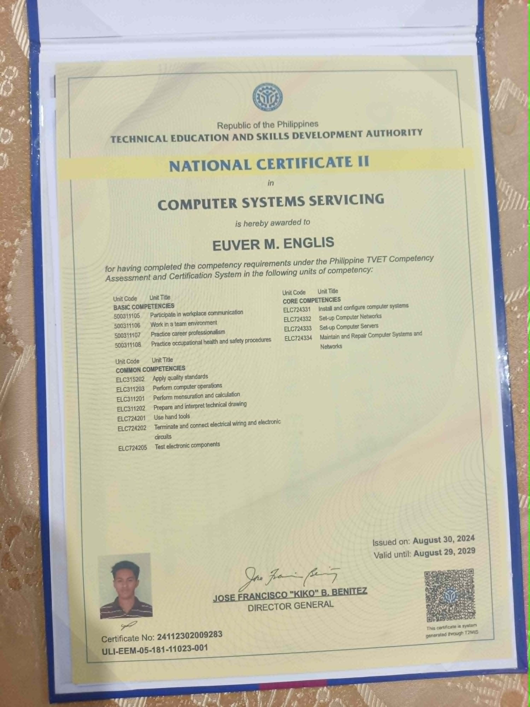

I am an Information Systems student with a strong interest in administrative support, technical support, customer service, and computer troubleshooting. I enjoy helping individuals and businesses improve productivity through technology while continuously developing my skills in information systems and digital solutions.
Get to know me better
Hi! I'm Euver M. Englis, an Information Systems student and aspiring Virtual Assistant with knowledge in computer troubleshooting, software installation, administrative support, and customer service. I am passionate about helping people solve computer-related problems while continuously improving my technical and communication skills.
Technologies I use
Document creation and formatting.
Data entry and spreadsheet management.
Professional email organization.
Providing quality customer assistance.
Basic hardware and software troubleshooting.
Basic network configuration and setup.
My Certifications and Training

National Certificate II in Computer Systems Servicing.
View CertificateWhat I Can Do
Organizing emails, schedules, and appointments efficiently.
Providing friendly and professional customer support.
Basic hardware, software installation, and troubleshooting.
Managing posts, messages, and online communication.
My Academic Journey
Currently pursuing a Bachelor of Science in Information Systems, with a focus on information technology, business processes, technical support, database management, and system development.
Some of My Recent Works
Diagnosing and resolving basic computer hardware and software issues.
Installing and configuring software applications for users.
Providing email management, document preparation, and administrative assistance.
Let's Work Together
engliseuver908@gmail.com
Euver M. Englis
github.com/euver
Panabo City, Philippines